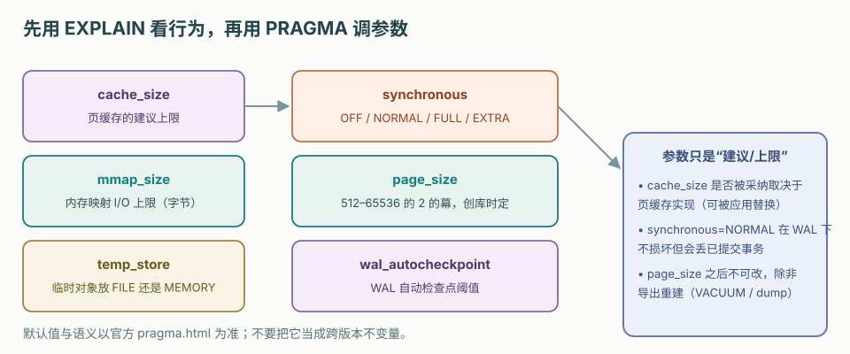
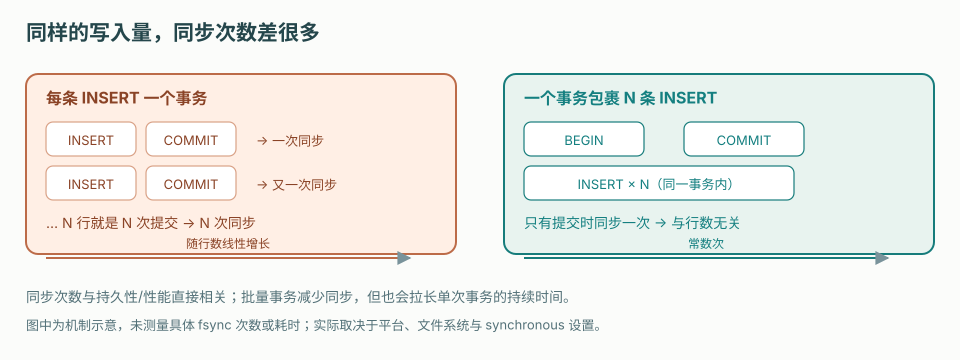

性能分析与优化：EXPLAIN、PRAGMA 与批量事务
SQLite 性能更多取决于怎么用。用 EXPLAIN 与 EXPLAIN QUERY PLAN 读计划、用关键 PRAGMA 调参数、用批量事务减少同步，并诚实面对单写者等性能边界。
1. SQLite 到底慢在哪？
对 SQLite 的评价常常两极分化：一端说它“极致可靠”，另一端说它“写入慢、并发差”。两者都不算错，但都回避了同一个问题——性能取决于你如何用它，而不是一个固定快慢值。同一个库，建索引与否、事务粒度不同，实际吞吐可以差很多。
所以本章的顺序是：先测量，后优化。不先看执行计划就改代码，等于盲改。下面每一步都给出可核对的官方入口与可运行的实验。
SQLITE_OMIT_* 宏的“节省 KB”列、“50–200 MB/s”写入、以及一个“30 秒到 0.5 秒”的真实故事。这些无可靠出处或属于跨版本不变量，已删除。保留的只是官方文档能核对的参数语义与机制。2. 先学会读执行计划
SQLite 提供两个不同层次的工具：EXPLAIN 给出准备语句生成的 VDBE 指令级列表；EXPLAIN QUERY PLAN 给出更高层的策略描述（扫描还是索引查找、用哪个索引、是否需要排序）。日常调优通常先看后者，再按需下钻到前者。
EXPLAIN QUERY PLAN
SELECT b FROM t WHERE a = 1;
-- SEARCH t USING INDEX i_t_a (a=?) （具体文本随版本而变）在 CLI 里，.eqp on 会对后续语句自动打印查询计划；.timer on 可显示耗时。但要注意：执行计划文本不是稳定接口，不同版本、不同 sqlite_stat1 或参数绑定下可能不同，不能把某一串输出当成必须先出现的结果。
3. 关键 PRAGMA 与其语义
参数不少，但先抓这几个高频的。注意：它们的默认值与会随版本变化，下面是官方文档可核对的语义。

| PRAGMA | 作用（官方语义） |
|---|---|
cache_size | 建议的内存页上限；内置默认约为 -2000（约 2MB），负值 N 表示 KiB 而非页 |
mmap_size | 单个数据库可用于内存映射 I/O 的最大字节数 |
temp_store | 临时表/索引放 FILE 还是 MEMORY（DEFAULT/FILE/MEMORY） |
synchronous | 同步级别 OFF/NORMAL/FULL/EXTRA |
page_size | 页大小，512–65536 的 2 的幕，创库时确定 |
4. 批处理事务与同步次数
最容易被忽略的优化不是索引，而是事务粒度。把 N 条 INSERT 各自提交，就产生 N 次提交开销（包括磁盘同步）；把它们放进一个事务，则只在提交时发生一次同步。写入的数据量完全一样，差别在提交/同步次数。

BEGIN;
INSERT INTO t VALUES (1,'a');
INSERT INTO t VALUES (2,'b');
-- … 全部写完后一次性提交
COMMIT;
-- 或者用多行 VALUES（同样减少语句/提交开销）
INSERT INTO t VALUES (1,'a'), (2,'b'), (3,'c');注意权衡：单次事务过大也会拉长持锁时间、增加回滚风险。应结合实际写入批量与同步策略取值，而不是一味追求“一个事务写全部”。
5. 性能边界：什么时候该换数据库
了解边界与了解优化同样重要。SQLite 的结构性约束：
| 维度 | 事实 |
|---|---|
| 写并发 | 同一数据库在同一时刻只有一个写事务；WAL 允许读与写并行，但不等于多写并行 |
| 体积上限 | 最多 4294967294 页；在最大 65536 字节页下约为 281 TB（官方注明该上限未实测） |
| 复制/高可用 | 没有原生主从复制或集群；跨节点复制需借助外部工具自行实现 |
| 分布式查询 | 没有跨节点的分布式查询引擎 |
因此：高并发写入、需要原生高可用/复制、或需要跨节点扩展的场景，应考虑客户端/服务器数据库。反之，对于本地缓存、移动端存储、嵌入式与桌面应用这类“单进程为主、延迟敏感”的场景，SQLite 的低延迟与零运维往往是优势。
6. 可运行实验
examples/25_perf.py 用标准库 sqlite3 验证几件可固定的事实：page_size 属于合法集合、synchronous 在 0–3 之间、带索引的查询计划中出现 i_t_a（而不是扫描）。
python3 examples/25_perf.py
# PASS: page_size=4096 synchronous=2 cache_size=2000 index_used=yes; sqlite3 3.54.0
# 具体数值取决于平台与构建，不应写成固定断言。实验不做任何耗时断言——单次运行的毫秒数不可靠，不能用来证明“优化了多少倍”。要得到可信结论，需要在固定硬件、固定数据上重复测量并报告分布。
可重复练习
- 对同一张表分别用逐条提交与单事务批量插入，记录两者的总耗时分布（多次运行）；
- 用
EXPLAIN QUERY PLAN对比有无索引时的计划差异； - 用
PRAGMA synchronous查询当前值，并解释 NORMAL 在 WAL 下的“不损坏但会丢已提交事务”含义。
自测：为什么局部优化不一定提升整体性能？
因为瓶颈可能在别处：同步次数、锁等待、临时文件的磁盘 I/O、或应用层逐条查询的 prepare/step 开销。不先测量定位瓶颈，优化可能只是把时间从一个环节搬到另一个环节。
原始资料与版本边界
本章参数语义与上限来自 SQLite 官方文档；默认值、性能数字与执行计划文本均随版本、平台与构建变化，应以本机 PRAGMA 查询与官方页面为准。
- PRAGMA Statements · SQLite 官方
- Limits In SQLite · SQLite 官方
- EXPLAIN · SQLite 官方
- Transactions · SQLite 官方